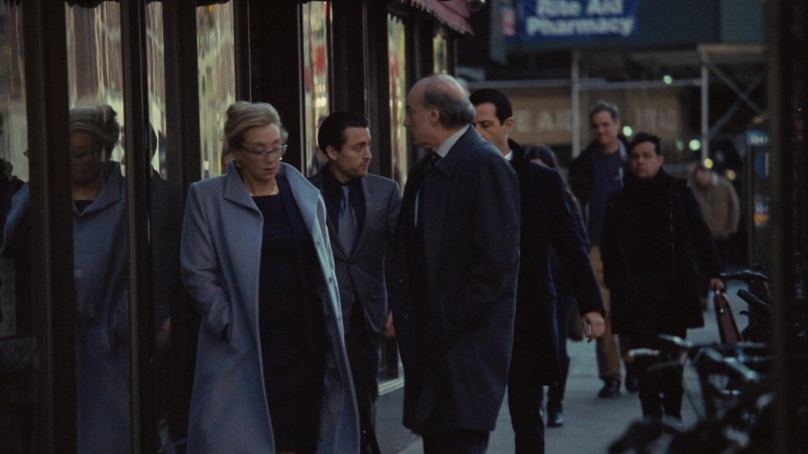
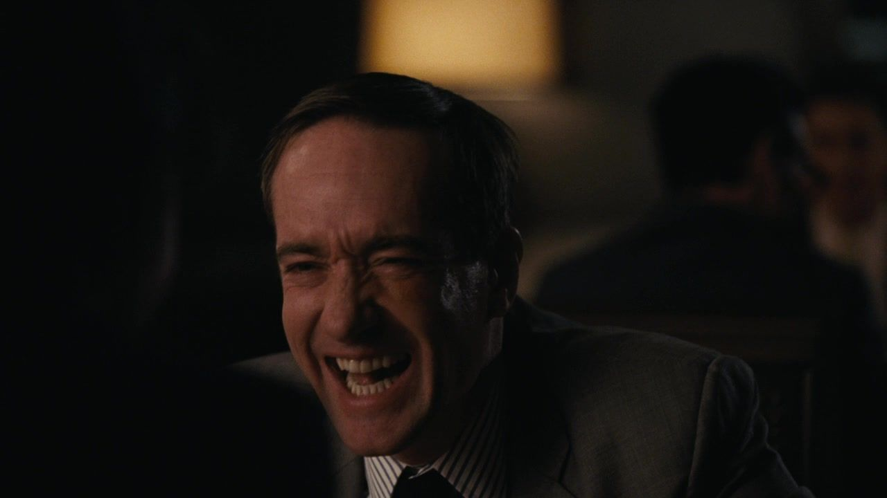
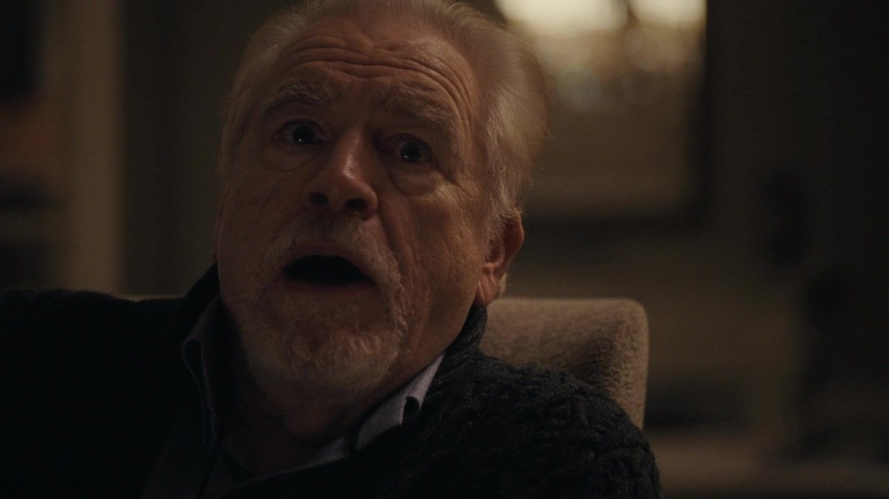
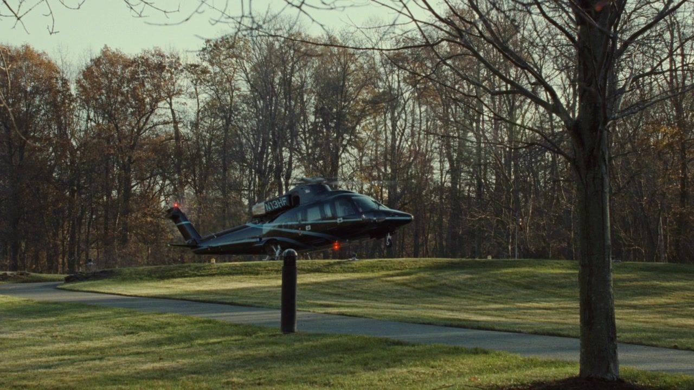
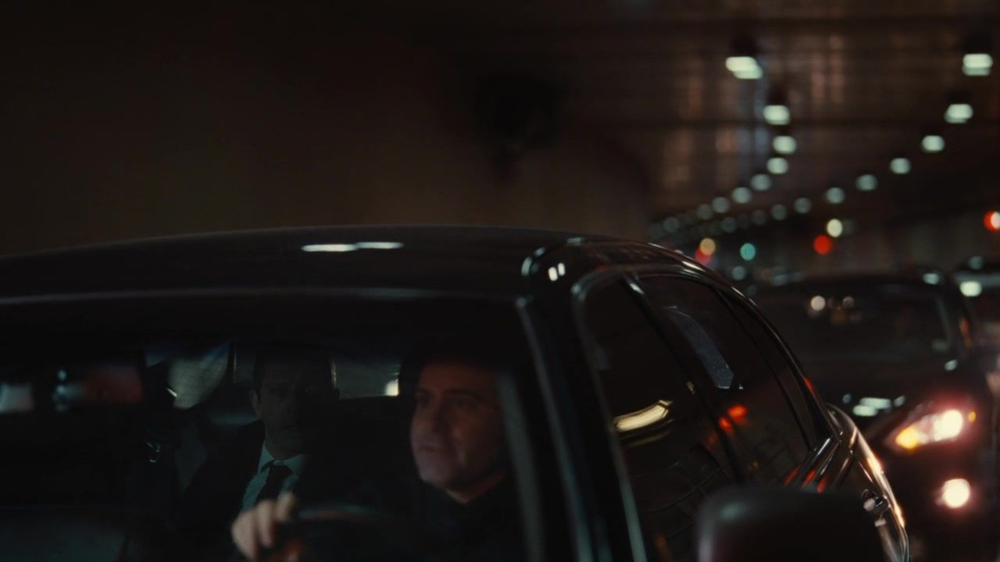
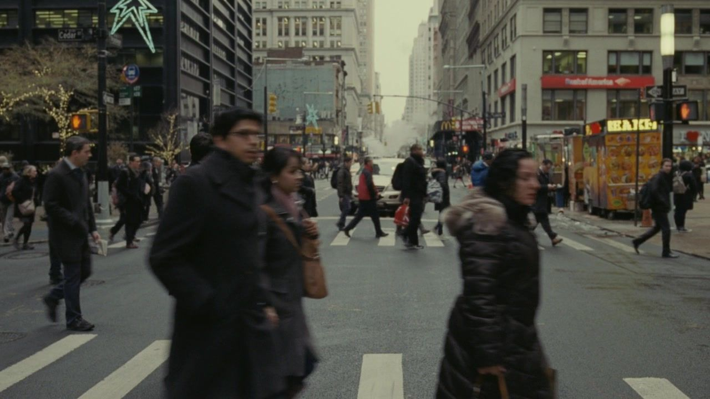

01 / THE STORY
从拉票到清场，
九次站位的改变。
按本集主线分为三幕；并行发生的谈话与善后，保留其交错关系。
NINE TURNSIACT I / SCENES 01—03
算票先把同意放进一张名单。
01私下会面 / 资本的立场
他支持的，首先是最后会赢的那一边。
剧情事实肯德尔向斯图伊争取支持，斯图伊回避绝对承诺，更关注自己作为投资人的位置。 [1] [2]
这一场为什么重要 个人解读
肯德尔想收集确定，斯图伊保留选择。理解这种回答不需要先判定朋友真假：一个人可以真心喜欢你，同时拒绝让自己的资本无条件跟着你的家庭战争走。危险在于，把友善的语气当成已经交出的票。
权力的变化私人支持与投票承诺之间出现缝隙。
董事与高管 / 四处确认
纸上的多数，需要一连串互不知情的承诺。

↗肯德尔与杰丽在外接触支持者的同场画面。｜HBO · 本集截图剧情事实肯德尔、弗兰克和杰丽等人协调行动；罗曼也与劳伦斯交流，尝试让他支持改变公司领导。 [1] [2]
这一场为什么重要 个人解读
秘密行动可以避免被父亲逐个阻止，也会让联盟难以成为一个能互相支撑的共同体。每个人面对的是各自的收益与风险，未必知道别人的底线。最后投票时，名单上的人数便不只取决于曾经谈过什么。
权力的变化联盟有了轮廓，承诺仍然分散。
并行 / 格雷格、汤姆与伊万
一边叫他远离，一边教他享受加入。

↗汤姆带格雷格体验富人消费的同场镜头。｜HBO · 本集截图剧情事实伊万告诫格雷格不要卷入表决，格雷格仍向汤姆透露消息。汤姆带他体验昂贵消费，强化两人的接近。 [1] [2]
这一场为什么重要 个人解读
祖父的警告要求他克制，汤姆的示范让加入显得可以马上尝到。格雷格不是完全不知道危险，而是也在比较自己站在谁身边更像拥有未来。利益不只表现为职位，有时先表现为被带进一个消费场景。
权力的变化忠诚通过提醒与奖赏同时被塑造。
这一幕之后联盟形成大致轮廓，仍有人保留模糊空间；各条支线也在测试忠诚的价格。
IIACT II / SCENES 04—06
离场儿子追一张票，父亲回到房间。
04华盛顿 / 洛根的行程
他以为能见总统，却被通知暂时不行。

↗洛根因行程变化停留在华盛顿的同场画面。｜HBO · 本集截图剧情事实洛根前往华盛顿会见总统，因潜在安全威胁等因素，原定会面被取消。 [1] [2]
这一场为什么重要 个人解读
这条线短暂把洛根放在别人的安排里。他对被晾着感到恼怒，也提醒观众：这个家里的最高权威，在更大的系统里仍会遭遇限制。意外的行程变化，又使肯德尔原以为父亲不在的窗口变得不稳。
权力的变化父亲对外遇到限制，对内的缺席却更难预测。
长岛 / 补足最后的把握
为了多一份确定，他离开了最需要在的地方。

↗肯德尔乘直升机前往长岛争取董事支持。｜HBO · 本集截图剧情事实肯德尔前往长岛探望一名生病的董事，希望获得支持或至少降低反对；他计划在开会前赶回。 [1] [2]
这一场为什么重要 个人解读
行动很积极，也包含对脆弱胜算的过度追逐。他把一张票看成可以补足安全感的最后一块，却低估了执行时间本身是风险。对父亲的反抗不只需要说服力，也需要承受仍有一部分无法提前控制。
权力的变化提高胜率的动作，制造了新的现场缺席。
回程 / 无法起飞的直升机
金钱能缩短路程，不能取消封锁。

↗肯德尔滞留车流、试图赶回会议现场。｜HBO · 本集截图剧情事实安全管制造成直升机无法按原计划返回，肯德尔被困在路面交通中，只能通过电话接入董事会。 [1] [2]
这一场为什么重要 个人解读
他习惯了昂贵工具能压缩距离，此刻距离重新变得真实。电话可以传递内容，不能代替一个人在房间里为盟友承受目光。父子对决不再只是论点强弱，也是谁能形成现场的情绪重心。
权力的变化儿子的声音到了，身体没有到场。
这一幕之后肯德尔为提高胜算离开曼哈顿，却因交通限制无法按时返回。
IIIACT III / SCENES 07—09
当面选择规则需要有人能把它执行完。
07董事会 / 洛根拒绝退出
会议要求他离场，他用在场改变会议。
 ↗洛根留在董事会现场，面对提出不信任的同事。｜HBO · 本集截图
↗洛根留在董事会现场，面对提出不信任的同事。｜HBO · 本集截图剧情事实弗兰克主持表决，洛根拒绝离开，并不断打断、质问反对者。肯德尔通过扬声器要求按程序进行。 [1] [2]
这一场为什么重要 个人解读
规则的力量取决于有人能让它兑现。洛根的优势是无需先证明自己的反驳更有道理，只要让每个人在公开说出反对时感到孤立。父亲的目光、老板的职位权与多年合作的历史，在同一张桌子上形成压力。
权力的变化私人威望压进正式程序。
同一张桌子 / 罗曼与弃权者
私下很勇敢，举手时却发现父亲就在对面。
 ↗董事会中伊万、弗兰克与斯图伊等人的同场画面。｜HBO · 本集截图
↗董事会中伊万、弗兰克与斯图伊等人的同场画面。｜HBO · 本集截图剧情事实罗曼未按肯德尔的期待坚持反对，斯图伊与劳伦斯选择弃权，伊万支持洛根留下。动议没有通过。 [1] [2]
这一场为什么重要 个人解读
这些选择各有理由：恐惧、投资计算、亲属忠诚，不能被简化成一个统一的背叛动作。但对肯德尔而言，它们叠在一起就足以改变结局。他错把不同性质的支持，暂时按同一种确定来计算。
权力的变化数字没有离开人，联盟在当面选择中改写。
散会与街头 / 洛根清场
失败不是各自回去工作，而是当场失去位置。

↗肯德尔在表决失败后走入街头。｜HBO · 本集截图剧情事实洛根宣称自己继续掌权，并解雇肯德尔、弗兰克等反对者。肯德尔赶回时，结果已难以挽回。 [1] [2]
这一场为什么重要 个人解读
这场清理不仅惩罚已经表态的人，也向仍在公司的人展示下一次反对的成本。肯德尔试图用程序摆脱父亲，父亲把程序的失败转成一次重新确认个人权威的机会。街头的儿子暂时失去的不只是职位，还有他熟悉的进入世界的方式。
权力的变化反对的成本被公开展示，父亲重新定义房间。
这一幕之后洛根拒绝退出并威压现场，投票结果没有按肯德尔的预期发展；失败被立刻转成清理反对者。